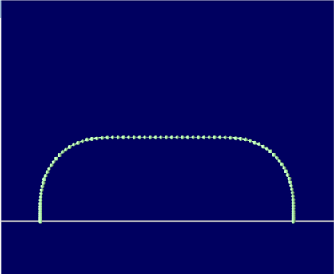
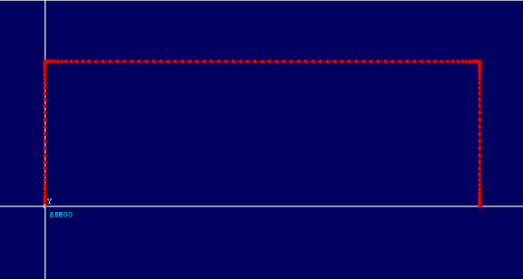
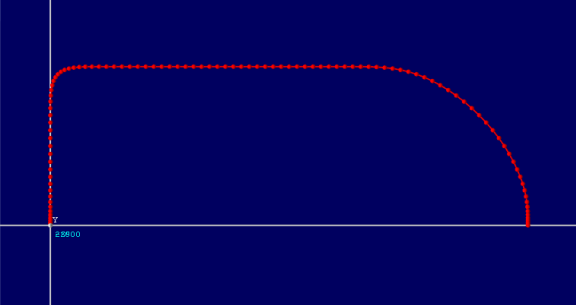

Axis Command
MOVEPICK(mode, x, y, z, withdraw, overlap_control_a, overlap_control_b, u, v, w, withdraw_control, xy_control, approach_control)
MOVEPICK is a move type aimed at making it simple to program fast pick and place operations. Associated move type PICKLINK is a linked move equivalent to MOVEPICK that is linked to the measured motion on another axis in a similar way to MOVELINK or FLEXLINK.

MOVEPICK is an absolute move to a position in 3..6 axes. However, the motion includes an incremental “withdraw” amount and special controls for the move speed profile to allow fast pick and place moves.
Multi-axis interpolation uses the UNITS, SPEED, ACCEL and DECEL of the BASE axis.
|
mode: |
Specify the number of axes 0 = xyz, 1 = xyzu, 2 = xyzuv, 3 = xyzuvw |
|
x: |
Target x absolute position |
|
y: |
Target y absolute position |
|
z: |
Target z absolute position |
|
withdraw: |
Incremental withdraw distance from the start position on z axis |
|
overlap_control_a: |
0 .. 0.9 Specify rounding on corner A (optional) |
|
overlap_control_b: |
0 .. 0.9 Specify rounding on corner B (optional) |
|
u: |
Target u absolute position (optional) |
|
v: |
Target v absolute position (optional) |
|
w: |
Target w absolute position (optional) |
|
withdraw_control: |
0..1 Adjust the speed for withdraw section (optional) |
|
xy_control: |
0..1 Adjust the speed for xy section (optional) |
|
approach_control: |
0..1 Adjust the speed for approach section (optional) |
overlap_control_a – 0 to 0.9; larger number for more rounding at first corner (default = 0.5)
overlap_control_b – 0 to 0.9; larger number for more rounding at second corner (default = 0.5)
overlap_control_a and overlap_control_b above are 0.6, 0.6

overlap_control_a and overlap_control_b above are 0.0, 0.0

overlap_control_a and overlap_control_b above are 0.4, 0.8
Note that the overlap control parameters should always be less than 1.0, and values between 0 and 0.8 are recommended.
The following optional parameters can be used to override the speed in each of the 3 motion sections. A value of 1 produces the specified SPEED value. Lower values generate lower speeds.
withdraw_control – Adjust the speed for withdraw section
xy_control – Adjust the speed for XY section
approach_control – Adjust the speed for approach section
In MOVEPICK the acceleration rate is controlled by the length of the shortest move. Therefore, if one of the moves is substantially smaller than the others it can result in high acceleration rates. The 3 parameters ‘withdraw_control’, ‘xy_control’, and ‘approach_control’ allow a slower speed to be assigned to shorter moves to allow lower acceleration rates.
MOVEPICK does not currently support a lower speed at the end of the approach movement. This will be supported in future versions.
Use MOVEPICK to go to and pick-up position set in a ‘xyz’ array and then go to a put-down position at 0,0,0. The z axis withdraws up 500 from each end position.
DIM xyz AS FLOAT(3)
UNITS AXIS(0) = 1000
UNITS AXIS(1) = 1000
UNITS AXIS(2) = 1000
SPEED = 5000
ACC(SPEED * 50)
'Absolute Positions:
xyz(0) = -1500
xyz(1) = 0
xyz(2) = -100
overlap1 = 0.6
overlap2 = 0.6
DEFPOS(0,0,0)
REPEAT
TRIGGER
MOVEPICK(0, xyz(0), xyz(1), xyz(2), 500, overlap1, _
overlap2, 0, 0, 0, 1.0, 1.0, 1.0)
WAIT IDLE
WA(500)
MOVEPICK(0, 0, 0, 0, 600, overlap2, overlap1, _
0, 0, 0, 1.0, 1.0, 1.0)
WAIT IDLE
WA(500)
UNTIL FALSE
3 axis pick and place showing use of the withdraw control and XY control.
BASE(axis1, axis2, axis3)
DEFPOS(0, 0, 50)
SPEED = 200
ACCEL = 5000
DECEL = 5000
'Move to start position
MOVEABS(100, 80, 50)
WAIT IDLE
'Set OP(16,ON) in terminal to start the repeating sequence
WAIT UNTIL IN(16) = ON
first_time = TRUE
REPEAT
SPEED = 500
target_x = 150
target_y = 100
target_z = 20
IF first_time THEN
withdraw = 10
first_time = FALSE
ELSE
withdraw = 50 'Relative height the Z will go to
ENDIF
ov_ctrl_a = 0.5 'Set between 0 and 0.9, bigger value means more curved
withdraw
ov_ctrl_b = 0.5 'Set between 0 and 0.9, bigger value means more curved
approach
wd_ctrl = 1 'Speed of withdraw, set between 0.001 and 1.0 (factors speed)
xy_ctrl = 0.6 'Speed of XY move, set between 0.001 and 1.0
app_ctrl = 1 'Speed of approach, set between 0.001 and 1.0
TRIGGER
MOVEPICK(0, target_x, target_y, target_z, withdraw, _
ov_ctrl_a, ov_ctrl_b, 0, 0, 0, _
wd_ctrl, xy_ctrl, app_ctrl)
WAIT IDLE
GOSUB pick
SPEED = 500
target_x = 50
target_y = 80
target_z = 0
withdraw = 30
ov_ctrl_a = 0.5
ov_ctrl_b = 0.5
wd_ctrl = 0.7
xy_ctrl = 0.6
app_ctrl = 1
MOVEPICK(0, target_x, target_y, target_z, withdraw, _
ov_ctrl_a, ov_ctrl_b, 0, 0, 0, _
wd_ctrl, xy_ctrl, app_ctrl)
WAIT IDLE
GOSUB place
UNTIL IN(16) = OFF
STOP
pick:
WA(pick_delay)
OP(32, ON) 'Suction on
WA(suction_delay)
RETURN
place:
WA(place_delay)
OP(32, OFF)
WA(drop_delay)
RETURN